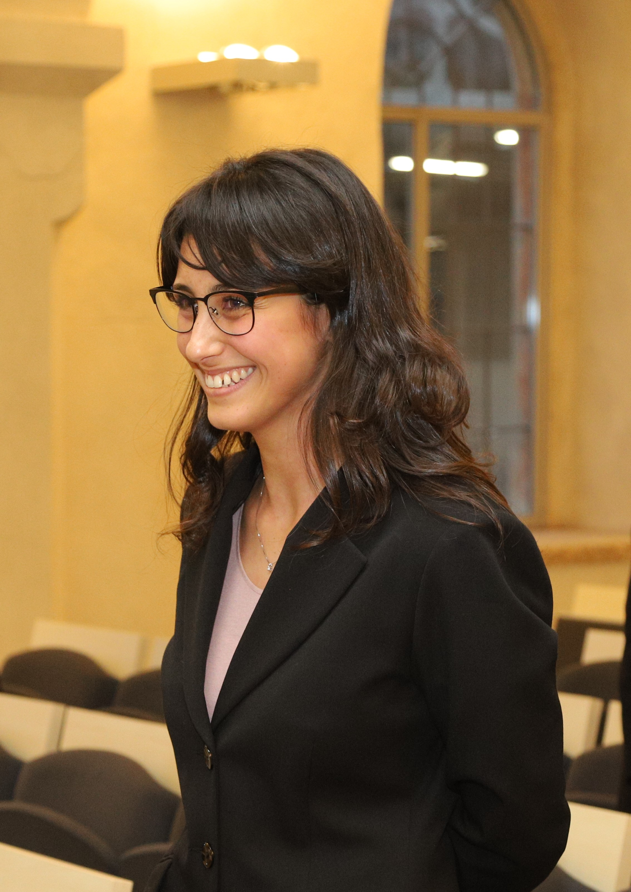

I am a third-year PhD student in Economics and Finance at the Department of Economics, University of Verona, supervised by Prof. Paolo Pertile, Prof. Paola Bertoli, and Prof. Alessandro Bucciol.
My research interests include Health Economics, Industrial Organization, and Applied Microeconometrics.
📧 clara.fertonani[at]univr.it
Department of Economics · University of Verona, Italy